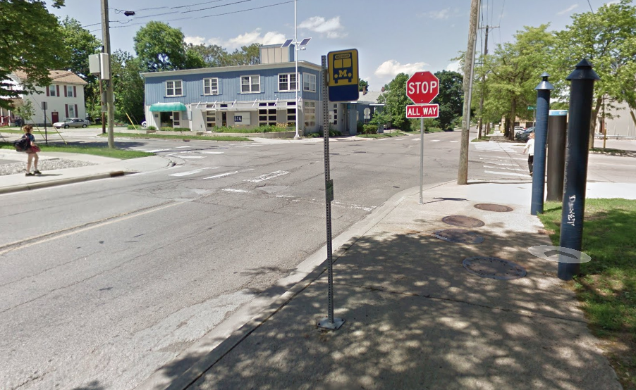

<!--
  Generated template for the GreenehooverPage page.

  See http://ionicframework.com/docs/components/#navigation for more info on
  Ionic pages and navigation.
-->
<ion-header>

  <ion-navbar>
    <ion-title>Greene &amp; Hoover</ion-title>

    <ion-buttons end>
        <button ion-button icon-only (click)="openActionSheet()">
            <ion-icon color="extra-light" name="more"></ion-icon>
          </button>
      </ion-buttons>
  </ion-navbar>

</ion-header>


<ion-content padding>

  
  <h2>Greene &amp; Hoover   <ion-icon name="star"></ion-icon></h2>
  <p>72 ft - E side of Green St at Hoover</p>

  <ion-list>
    <ion-list-header>Bus Arriving</ion-list-header>
    <ion-item>Commuter North
      <ion-note item-end>
        3-5, 11-13 min
        </ion-note></ion-item>
  </ion-list>

  <button ion-item>Go to Rec Sports </button>

</ion-content>
